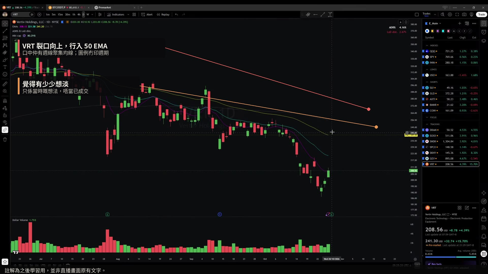
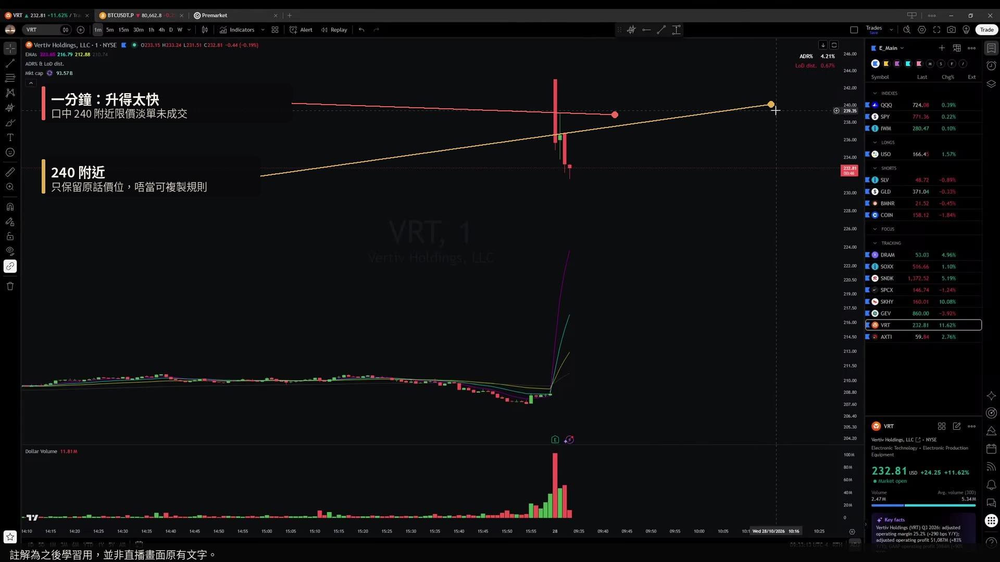
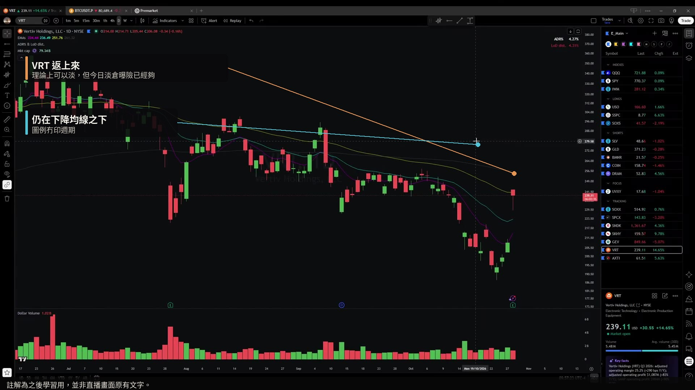

概要
先見到裂口入均線，之後成交唔到，再之後唔再加倉
08:24 佢話 VRT 裂口向上，行入 50 EMA，亦對住週線聚集均線，覺得有少少想淡。約 10:49 至 12:11，一分鐘圖見到升得太快，口中 240 附近限價淡單未成交。35:23 再說 VRT 返上來，理論上可以淡，但今日淡倉曝險已經夠。
YouTube 把 10:49 之後一句聽成 futures；Whisper 聽成 frt。當時畫面係 VRT 一分鐘，以畫面為準。圖例冇印均線週期。口中 240 只保留原話，唔當可複製規則。
圖一
裂口向上，行入 50 EMA 同週線聚集均線
直播 08:26

原話
This VRT is gapping up into this 50 EMA, and also the weekly clustering EMAs too. I'm a little bit tempting to short this thing.
呢隻 VRT 裂口向上，行入呢條 50 EMA，亦都對住週線聚集均線。我有少少想淡呢隻。
YouTube 字幕寫 clustering；Whisper 聽成 bustering。按 YouTube 同語境改為 clustering。
點樣讀
教學點係位置：裂口不是隨便追淡，而係行入日線 50 同週線聚集均線呢類阻力帶，先令佢心動。
「有少少想淡」係當時想法，呢一段未講已成交。圖例冇印均線週期。
圖二 · 其後
一分鐘升得太快，240 附近限價未成交
直播 12:10

原話
But this VRT is moving so fast. I have a limit order at like the 240-ish, but I never got filled.
但呢隻 VRT 行得太快。我喺大約 240 附近掛咗限價單，但一直未成交。
YouTube 聽成 futures；Whisper 聽成 frt。10:42 前後先掃過 AXTI（有觀眾問業績前止蝕），之後畫面係 VRT。以畫面同「240-ish」為準。filled 按語境由 feel 更正。
點樣讀
同一淡倉想法，執行上掛喺 240 附近，但一分鐘急升令單未成交。
240 只係原話大約價位，唔寫成可複製嘅入場規則。前面 AXTI 觀眾提問只有一句「希望唔好低開」，唔單獨成科。
圖三 · 其後
返上來可以淡，但今日曝險已經夠
直播 36:20

原話
VRT is coming back. I think right now I'm doing pretty good. But yeah, I think it could be a short, but I think I've already got enough short exposure today.
VRT 返上來。我覺得而家自己做得幾好。係，我覺得佢可以係淡倉，但我覺得今日淡倉曝險已經夠。
YouTube 把 VRT 聽成 PRT；Whisper 同畫面都係 VRT。
點樣讀
後面呢一段係倉位管理：形態仲可以淡，但唔再加，因為今日已經有足夠淡倉。
呢句唔等於否定早前嘅位置，只係話曝險已經夠。
附註
注意事項
- 畫面睇唔到限價有冇掛出、成交價或者損益，所以 240 只保留原話。
- 圖例冇印均線週期；50 EMA 同週線聚集均線以口中講法為準。